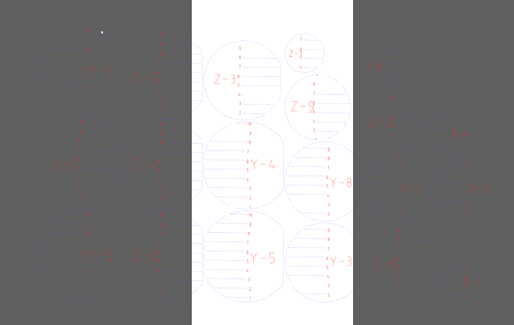
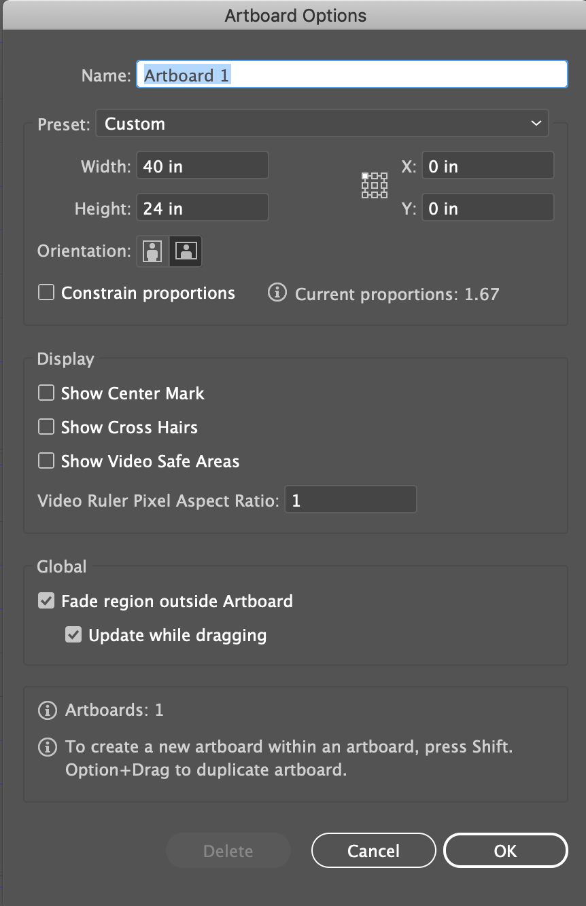
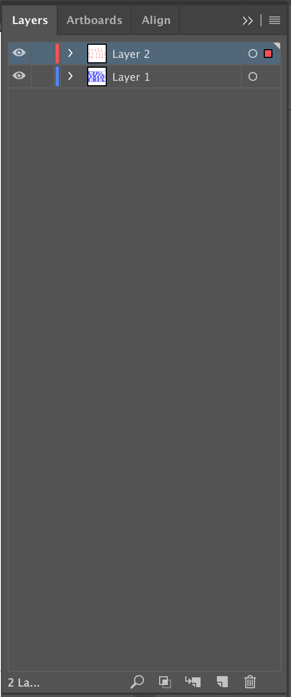
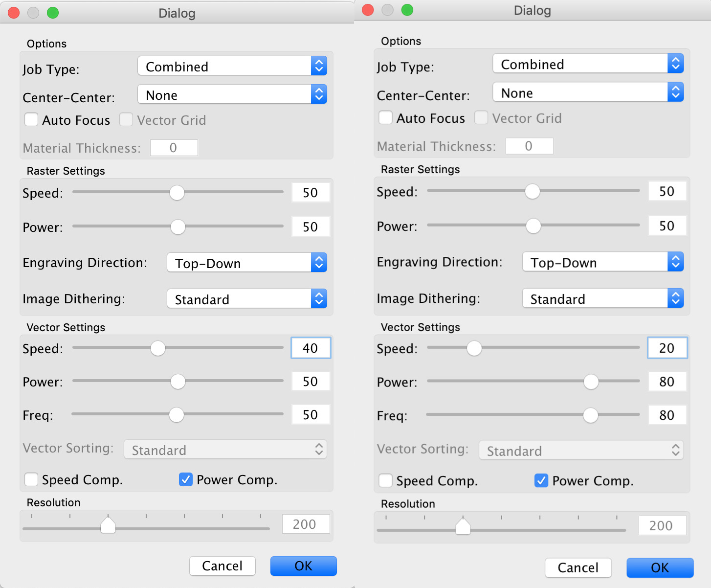
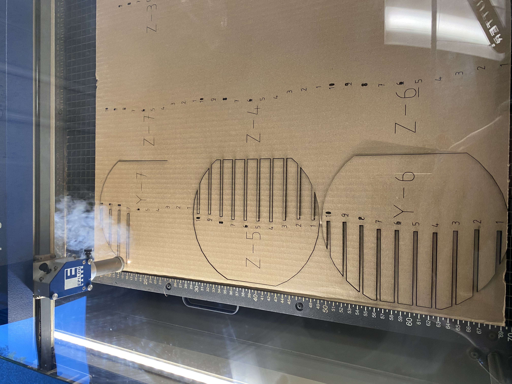

6.2 Laser Cutting and Assembling
Using Adobe Illustrator, I opened the ESP file exported from the Slicer Software.
After importing the file I had to prepare the file for Laser Cutting. For this I first adjusted the artboard size to the material size I am using for lazer cut.
After adjusting the size of the Artboard I seperated the texts and the lines for cutting the pieces into seperate layers. I did this becausee Epilogue Laser Cutter Software does not differenciate between the lines that should be cut or engraved for this occasion.
After seperating them, I was now able to select each layer and print them seperately. This allowed me to go to Epilogue and select different Laser Cutting settings. These are the settings I chose:
These are the images during the Laser Cut:
I put the pieces together by starting from Z-1, I could have used the manual in the Slicer Software but I accidentally closed the app without saving the file. Using the numbers on the Z-1 part, I put the Y parts. At the end it looked like this: